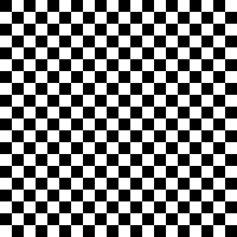
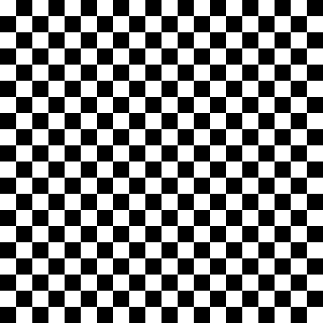

Sample 1

Sample 2

Sample 3

Sample 4

Sample 5

Sample 6

Sample 7
SAT instances generated from overlapping-pattern constraints. UniGen was used to generate multiple satisfying assignments, which were decoded back into images.
 Sample 1 |
Sample 2 |
Sample 3 |
Sample 4 |
Sample 5 |
 Sample 6 |
Sample 7 |
 Sample 1 |
 Sample 2 |
 Sample 3 |
 Sample 4 |
 Sample 5 |
Observation. UniGen rapidly produces multiple legal SAT solutions exhibiting substantial diversity. Since sampling is presently uniform over satisfying assignments rather than weighted by pattern frequencies, visual fidelity to the original benchmark is expected to be lower than weighted approaches such as WAPS.